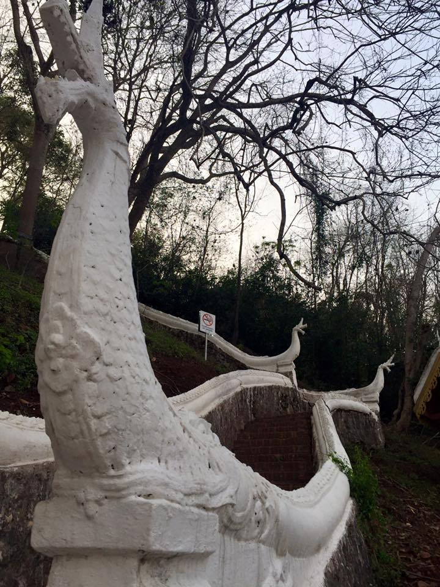
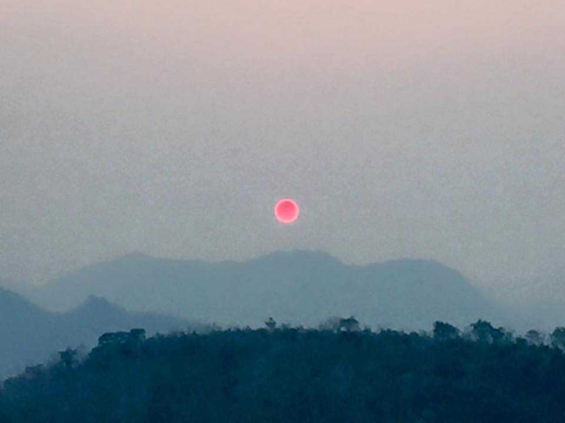
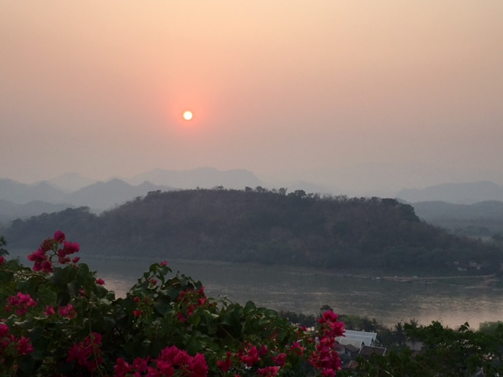
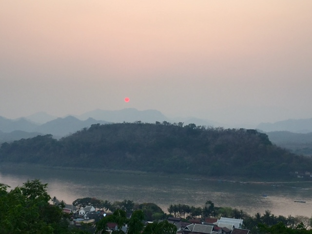
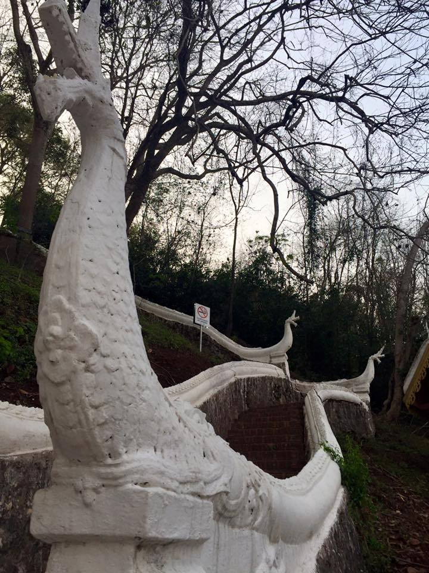
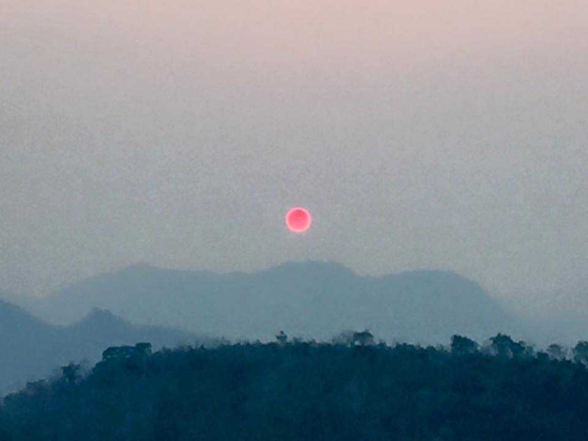
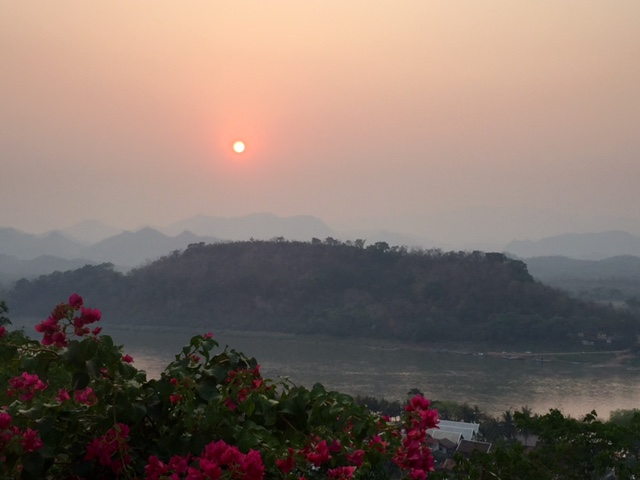
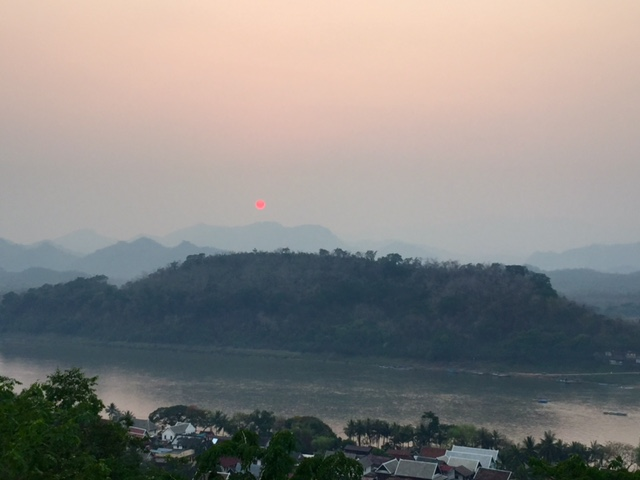
Luang Prabang is a magic place that once you visit you promise yourself you will return there one day. This city (meaning literally Royal Buddha Image) located in North central Laos, is classified along with other 33 villages as a UNESCO World Heritage site.
The central part of the city comprises of four main roads that form a peninsula where two rivers conflux: the Mekong and the Nam Kham rivers. These main roads have plenty of Buddhist temples to visit. Actually you have so many options that you can only afford to visit two or three. Try Wat Mai, the largest one in the city, and Wat Xieng Thong, probably the most beautiful. The Royal Palace complex also worth a visit. You can both walk or ride a bicycle as the city center is quite small. If you're not staying in the city center, you can ask for a tuk-tuk. There are lots of them and it is cheaper if you share the it with other turists .
There is an unforgettable activity to do in Luang Prabang: to watch the sunset over Mekong River from the top of Phou Si hill. If you want to get a good spot you should go up at least one hour earlier: there are a lot of stairs to climb and the place can be fully crowded. After sunset and coming down the hill it is time to shop at the local Night Market. You can find beautiful handcrafts, souvenirs, clothing among other items. If you are a shopping addicted it worth a visit, I promise!
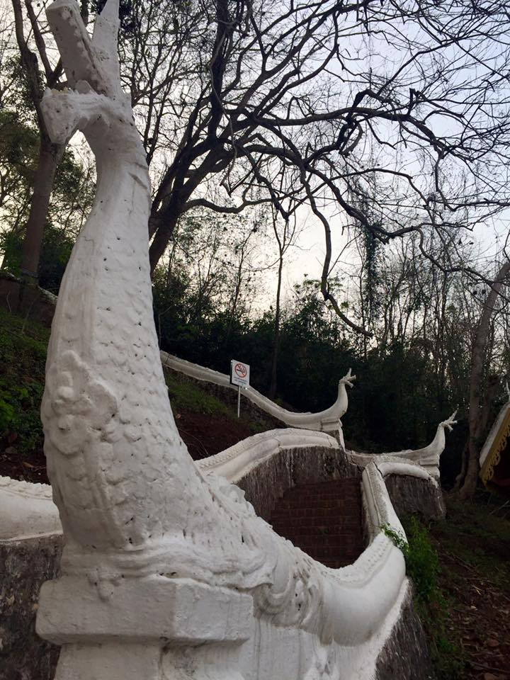
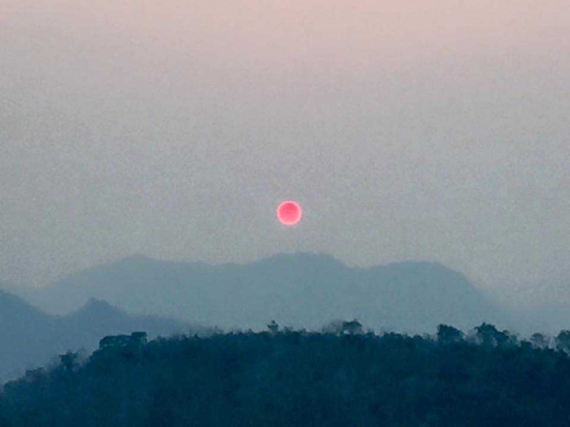
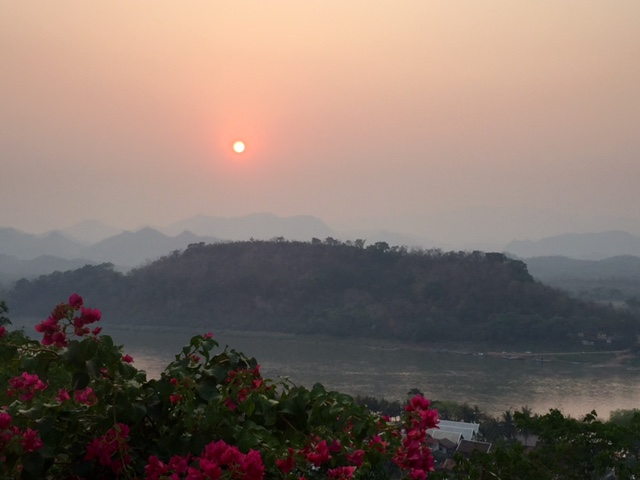
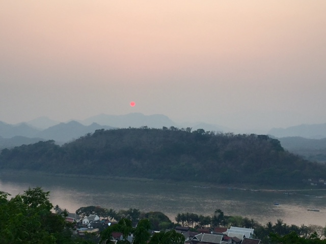
Another beautiful sightseeing is the Kuang Si falls, placed 45 minutes away from Luang Prabang. It is recommendable to go there early morning by taxi our tuk-tuk. You may take a bath in the lagoons but beware because the water can be quite cold!
Visa: The visa is on arrival but please make sure your visa is valid for more than 6 months, otherwise you are not even allowed to fly.
Currency: the official currency is the Lao Kip. You can exchange money locally or withdraw at an ATM machine (there are plenty of them in the city center).
Best time of the year to visit: between November and April, during the dry season, is the best time to visit Laos. Luang Prabang can be very hot during the day and if your hotel has a swimming pool you may find yourself having a great sunbathing!
Number of days: It is recommendable to stay in Luang Prabang for two or three days, depending on your mood to stay just within the city center or visit other places further afield. A good city to travel from is Hanoi, in Vietnam, which is only one hour away from Luang Prabang. You can combine a visit to both countries - Vietnam and Laos - it is quite convenient due to their proximity.
Recommended Hotel: Satri house is one of those places you don't want to leave. It has charming decoration, friendly staff and an amazing food. Try the typical Mekong fish cooked in banana leaves and Lao Fresh Spring Rolls. The SPA has all sort of treatments that will make you forget your busy days at work! The Lao massage can be quite invigorating. http://www.satrihouse.com/index.php/english/home/